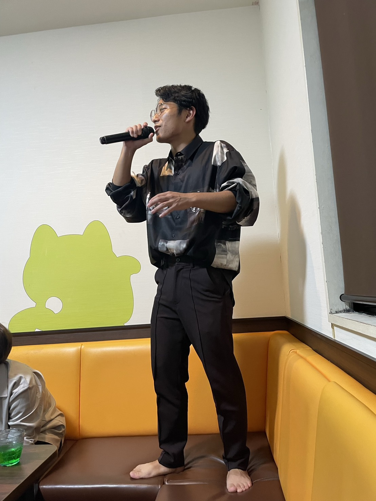

歌い手としてのオファーを受けるほど圧倒的な美声を誇るはたかずま。その輝かしい功績と、裏に秘められた想いを感じられる貴重な写真・資料を展示しています。
おしゃれにも精通していたはたかずま。タンクトップのアーカイブなど、ここでしか見られない貴重な展示をご覧いただけます。
役者としても頭角を現していたはたかずま。デビュー作『1000ドルのピザ』の舞台裏など、当時を語るうえで欠かせない資料を公開しています。